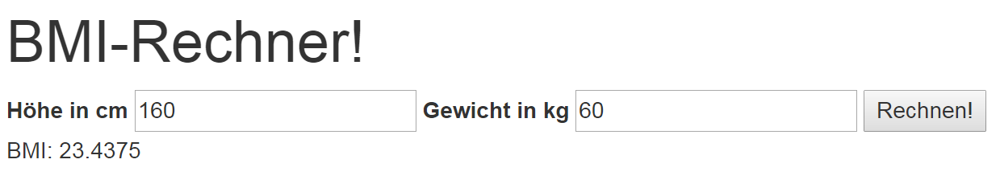

ASP.NET Core
Ziel
Anhand eines BMI-Rechners sollen die im Unterricht erworbenen ASP.NET Grundlagen angewendet und vertieft werden.
Aufgabe 1
Der BMI-Rechner könnte in einer vereinfachten Variante wie folgt aussehen:

Gehen Sie bei Ihrer Implementation wie folgt vor:
- Nutzen Sie die Vorlage.
- Erstellen Sie innerhalb der Index-Seite das HTML sowie den Razor-Code für den Rechner.
- Implementieren Sie die OnPost-Methode, welche den BMI anhand des Gewichtiges und der Höhe berechnen kann.
-
- Definieren Sie eine Klasse um die Daten (Höhe und Gewicht) zu gruppieren.
- Bei fehlerhaften Eingaben soll "Fehlerhafte Daten“ ausgegeben werden. z.B. Gewicht über 500kg oder kleiner 30cm
- Das Formular soll POST-Request korrekt absenden. Nutzen Sie dafür die Tag-Helpers.
- Die Berechnung des BMI's soll in einen Service ausgelagert werden:
-
- BMI-Services ist Teil der Vorlage.
- Registrieren Sie den BmiService im Dependency-Injection-Container.
- Lassen Sie sich den Service „Injecten“ und nutzen Sie die vom Dependency-Injection-Container zur Verfügung gestellte Instanz.
- Nutzen Sie die AJAX um das Resultat darzustellen.
-
- Definieren Sie dafür einen Handler oder eine seperate Page
Aufgabe 2
Erstellen Sie eine weitere Variante des Rechners.
In dieser Variante soll der BMI als Tabelle dargestellt werden und die zutreffende Reihe hervorgehoben werden.
Generieren Sie die BMI-Tabelle (siehe Bild) aus einem strukturierten Datenbestand.
Als Basis könnte folgende Struktur dienen:
var data = new[]
{
new {Text = "starkes Untergewicht", Max=16.0},
new {Text = "mäßiges Untergewicht", Max=17.0},
new {Text = "leichtes Untergewicht", Max=18.5},
new {Text = "Normalgewicht", Max=25.0},
new {Text = "Präadipositas", Max=30.0},
new {Text = "Adipositas Grad I", Max=35.0},
new {Text = "Adipositas Grad II", Max=40.0},
new {Text = "Adipositas Grad III", Max=999.0},
};
- Definieren Sie eine weitere Page welche die Daten (Höhe und Gewicht) entgegennimmt.
- Definieren Sie die Daten als Array und „rendern“ Sie die Tabelle mit einer foreach-Schleife.
- Verbinden Sie Ihre Lösung von Aufgabe 1 und Aufgabe 2: Beim Resultat bei Aufgabe 1 soll nicht mehr nur der BMI stehen sondern die generierte Razor Page von Aufgabe 2.
- Alternative: Definieren Sie die BMI-Tabelle als View-Component
Aufgabe 3
Versuchen Sie ihre Lösung mit zu Stylen z.B. mit Bootstrap

Aufgabe 4
Vergleichen Sie ihre Lösung mit der abgegeben Lösung.